Flutter:
Contenido:
¿Qué es Flutter?
Flutter es set de herramientas de Google para construir experiencias nativas de alta calidad para móvil, web y escritorio en tiempo récord. Flutter funciona con el código existente, es utilizado por los desarrolladores y organizaciones de todo el mundo, es libre y de código abierto.
Permite desarrollar el Layout y la funcionalidad de una app de una manera rápida y sencilla.
¿Qué hace Flutter?
Flutter hace que las UIs de las aplicaciones cobren vida.
· Para los desarrolladores, Flutter baja la curva de aprendizaje para construir aplicaciones móviles. Acelera el desarrollo de aplicaciones móviles y reduce el costo y la complejidad de la producción de aplicaciones en iOS y Android.
· Para los diseñadores, Flutter ayuda a entregar la visión de diseño original sin pérdida de fidelidad ni compromisos. También actúa como una herramienta productiva de creación de prototipos.
Flutter es para desarrolladores que quieren una forma más rápida de construir aplicaciones móviles, o una forma de llegar a más usuarios con una sola inversión.
Flutter es para usuarios que desean aplicaciones bellas, con movimientos y animaciones hermosas, y UI con carácter y una identidad propia.
¿Qué tipo de aplicaciones puedo construir con Flutter?
Flutter está optimizado para aplicaciones móviles 2D que desean ejecutarse tanto Android como iOS.
Las aplicaciones que necesitan entregar diseños de marca son particularmente muy adecuadas para Flutter. Igualmente, las aplicaciones que deben verse como las apps de serie de la plataforma, también se pueden construir con Flutter.
Puede crear aplicaciones con todas las funcionalidades, incluido cámara, geolocalización, red, almacenamiento, SDK de terceros y más.
Widgets
Los widgets son los elementos que afectan y controlan la vista y la interfaz de una aplicación. No es exagerado decir que los widgets son una de las partes más importantes de una aplicación móvil. De hecho, los widgets por sí solos pueden hacer o romper una aplicación.
· El aspecto de los widgets es primordial. Los widgets deben tener un buen aspecto, incluso en varios tamaños de pantalla. También necesitan sentirse naturales.
· Los widgets deben ser rápidos: para crear el árbol de widgets, ampliarlos (instanciando a sus hijos), colocarlos en la pantalla, renderizarlos o (especialmente) animarlos.
· Para las aplicaciones modernas, los widgets deben ser extensibles y personalizables. Los desarrolladores quieren poder añadir nuevos y atractivos widgets y personalizar todos los widgets para que coincidan con la marca de la aplicación.
Una de las mayores mejoras en Flutter es la forma en que realiza el layout. El layout determina el tamaño y la posición de los widgets basándose en un conjunto de reglas (también llamadas restricciones).
Google quería ver si se podía construir un renderizador más rápido si ignorábamos el modelo tradicional de layout. Después de unas pocas semanas, habíamos logrado importantes mejoras en el rendimiento.
Se da cuenta de que el layout podía simplificarse significativamente de la siguiente manera:
· En lugar de tener un gran conjunto de reglas de layout que se pueden aplicar a cualquier widget, cada widget especificaría su propio modelo de layout simple.
· Debido a que cada widget tiene un conjunto mucho más pequeño de reglas de layout a tener en cuenta, el layout puede ser optimizado en gran medida.
· Para simplificar aún más el layout, hemos convertido casi todo en un widget.
Flutter tiene un modelo de layout único que llamamos “modelo sliver layout” que se utiliza para el desplazamiento.
El layout en Flutter es tan rápido que se puede utilizar para el scrolling.
El scrolling debe ser instantáneo y tan suave que el usuario sienta como si la imagen de la pantalla estuviera pegada a su dedo mientras la arrastra por la pantalla física.
Compatibilidad
Debido a que los widgets (y el renderizador para esos widgets) son parte de tu aplicación, no de la plataforma, no se necesitan “bibliotecas compat”. Sus aplicaciones no sólo funcionarán, sino que funcionarán de la misma manera en las versiones recientes del sistema operativo: Android Jelly Bean y posteriores, e iOS 8.0 y posteriores. Esto reduce significativamente la necesidad de probar aplicaciones en versiones anteriores del sistema operativo
¿Qué hace que Flutter sea único?
Flutter es diferente a la mayoría de las otras opciones para construir aplicaciones móviles porque Flutter no usa ni WebView ni los widgets OEM que se incluyen con el dispositivo. En cambio, Flutter usa su propio motor de renderizado de alto rendimiento para dibujar widgets.
1. Interfaz gráfica fluida y personalizada
· flutter se encarga de gestionar el renderizado completamente con la ayuda de una UI y cómo lo hace debido a que Flutter incluye un motor de renderizado el cual es llamado Skia es un motor Open Source
· Flutter respeta el comportamiento en cada plataforma sea iOS o Android por en flutter pinta cada Píxel en la pantalla esto quiere decir no usa los widgets que provee Android SDK o en iOs el SDK y esto lo hace para mantener la personalización un ejemplo claro de esto es cuando nosotros utilizamos diferentes versionamietons en nuestros dispositivo de Android o simplemente el fabricante utiliza una personalización hace que la aplicación no se comporte de igual manera así que flutter pinta cada Píxel en la pantalla y al pintar cada Píxel en la pantalla es como un canvas donde están pintado todos los componentes que se va a comportar de igual manera sin importar los versionamientos que se tenga.
· Corre hasta 60 frames por segundo y usa la saturación basada en gpus.
· En el ngn se plas plas no se puede modificar se encuentra el motor esquía, la programación por parte de dart, la máquina virtual y el texto este es un componente extraído desde Chrome para el manejo de todo el texto
· En el framework Dart cómo puedo ingresar al código ya que se encuentra bien documentado esto quiere decir que cuando nosotros estemos desarrollando una aplicación en flutter podemos tener un auto completado al código y podemos ver qué es lo que hace permitiendo así realizar una personalización a cualquier nivel
· Cabe recalcar que el layout es creado por código esto quiere decir que genera a veces el rechazo de muchos desarrolladores están acostumbrados a crear un layout desde XML para Android o Story Board en iOs
2. Compilación a Nativo iOs & Android
· Copia directamente al código de máquina esto quiere decir qué es flutter utiliza en sí su codificación para que se pueda entender por la computadora además es muy fluida.
· Se puede utilizar la máquina virtual de dart está prácticamente se utiliza cuando se encuentra en un entorno de desarrollo.
· Cuando se encuentra en el modo debug flutter tiene por defecto la máquina virtual de Dart lo que hace que nuestra aplicación se transforme un poco pesada cuando se está desarrollando se puede notar en este caso que las transiciones no son tan rápidas como cuando se trabaja en el modo release cuando se trabaja en este modo ya se genera la apk entonces la aplicación se vuelve más rápida y fluida sin demora en el arranque esto debido a que dart permite o tiene dos tipos de compilación
· Yesintime que se usa para ibagmo y eutajerostime que se usa para el modo reléase
3. Patrón reactivo
· flutter está creado widgets quiero decir que si el framework trabaja en modo reactivo en esto tenemos dos tipos de widgets
· Stateless sin estado stateful con estado lo que quiere decir qué se puede realizar un texto sin movimiento o crear hasta un gif esto depende si es que hay interacción con el usuario por ejemplo si nosotros aplastamos cualquier botón de nuestra aplicación el usuario está interactuando con este componente y puede cambiar de forma, de color entre otros.
· Flutter permite reconstruir sus widgets ligeramente ya que flutter dispone de un método que se llama set State y además tiene una memoria y un framework especialmente diseñado para el dibujado de componentes en pantalla lo cual hace que maneje un performance muy bueno al momento de reconstruir widgets.
· Flutter en sí se basa en una composición donde nosotros podemos ir poniendo un widget dentro de otro widget, un ejemplo claro de esto es el siguiente
· cuando nosotros creamos nuestro primer botón lo podemos instanciar con la clase llamada RaisedButton qué está ya existen flutter con esta clase nosotros tenemos un botón ya con un texto predefinido y lo podemos seguir componiendo, la clase RaisedButton tiene una propiedad llamada Child la cual nos permite poner otro widget, en este caso el widget que nosotros vamos a poner este texto para lo cual se escribe el siguiente código:
· Saffold es un template de una aplicación móvil en la cual vamos a tener las típicas aplicaciones con una barra y un contenido dónde entonces el Skyfull tiene dos atributos y dentro de estos va a tener más atributos entre los principales está el body y appbar
· Appbar: es el toolbar en Android y el navigation bar en iOs el cual tiene un widget de texto en este caso es Flutter button
4. Herramientas de desarrollo
· Utiliza las 3 principales herramientas que son InteliJ, Android Studio y visual Studio Code estos 3 funcionan a base de un plugin que se instala para poder acceder a las características del flutter también se puede hacerlo vía consola o terminal.
· Utiliza el hot reload puedes hacer un cambio en una aplicación Flutter mientras se está ejecutando, y recargará el código de la aplicación que ha cambiado y dejará que continúe desde donde la dejaste, esto se puede realizar gracias a la máquina virtual de Dart.
· Flutter tiene un gestor de paquetes este permite acceder ya gps o al giroscopio ya que son paquetes creados, también que nos permiten poder crear plugins flutter que nos permiten acceder a componentes del hardware del dispositivo y eso se puede realizarlo a través del código de Android o en el código de iOS, también se puede escribir código Java o kotlin si es el caso que nosotros queramos
¿Qué es Dart?
Es el lenguaje de Flutter, es un lenguaje de programación orientado a objetos y creado por Google. Es altamente versátil, por lo cual puede ser utilizado en el desarrollo de:
· Aplicaciones Mobile y desktop;
· Scripts;
· Back-end.
Para esto, Dart utiliza más de una plataforma; así que cada una de estas plataformas tiene los recursos necesarios para que sea posible programar en diferentes ambientes.
Flutter también es una creación de Google, lo que justifica la facilidad con la que estos actúan juntos
Instalación de Flutter y Dart
Para instalar el SDK y los pluggins de Flutter y Dart se deben seguir los siguientes pasos.
1. Ingresar a la página de Flutter https://esflutter.dev/docs/get-started/install, en la cual se debe escoger el sistema operativo con el que se desee trabajar.
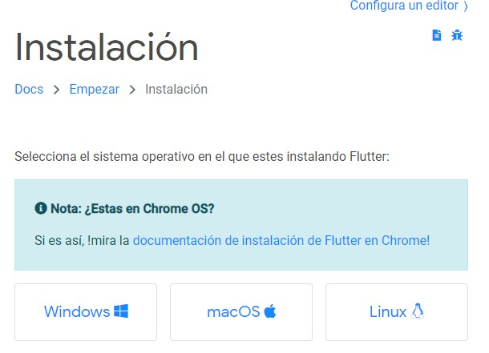2. En la pantalla de Obtener el SDK de Flutter dar clic en la opción de instalación la cual es un zip descargar el archivo y descomprimir la carpeta de Flutter en el Disco Local C.
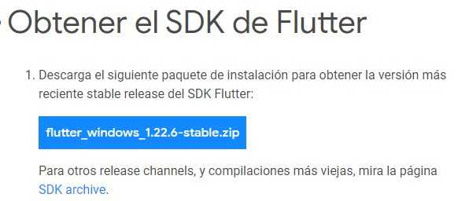 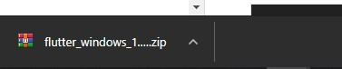 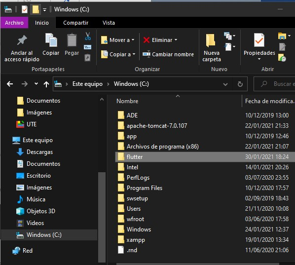3. Ingresar a las variables de entorno selecciona la opción de Path escoger Editar una vez escogida la opción dar clic en Examinar, se despliega una pantalla Buscar carpeta en la cual escoger dentro de Disco local C la carpeta de Flutter finalmente dar clic en Aceptar
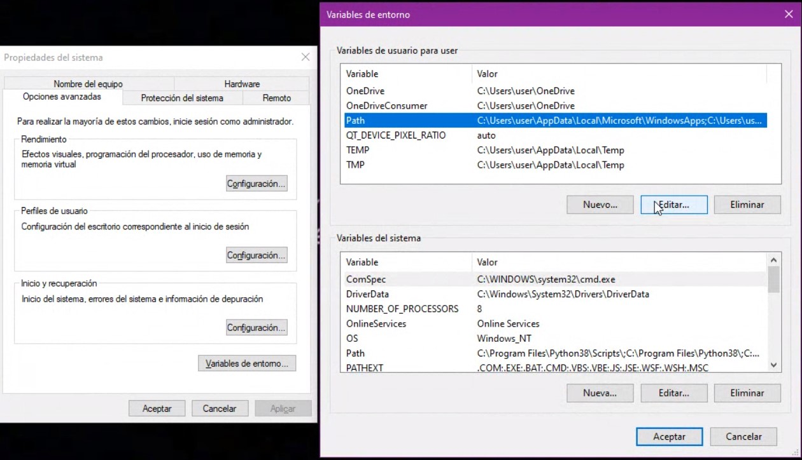 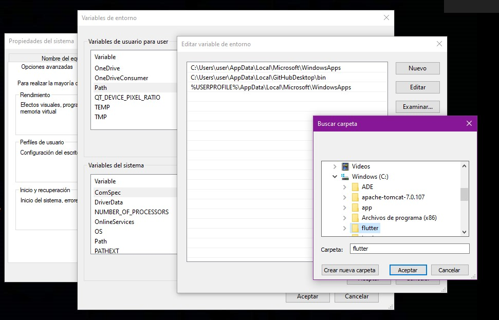4. Ingresar en Android Studio en Settings-Pluggins y buscar Flutter e instalar en Android Studio se instala Dart por defecto y se reinicia el Android Studio.
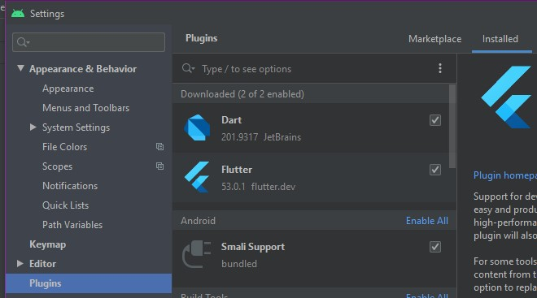
5. Dentro de la Carpeta de Flutter ingresar a flutter_consolen y ejecutar.
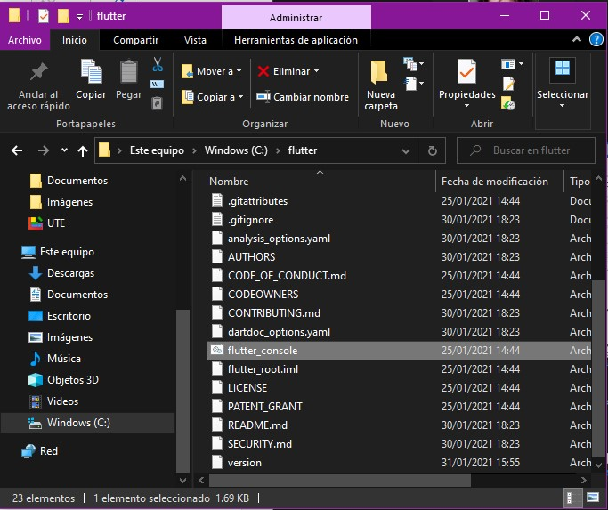6. Desde la consola de Flutter ingresar el siguiente comando Flutter doctor - -android-licenses.
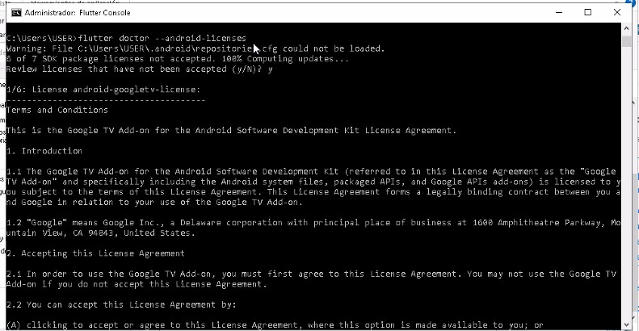En el cual se desplegará la información de cada licencia por año y se deberá aceptar y
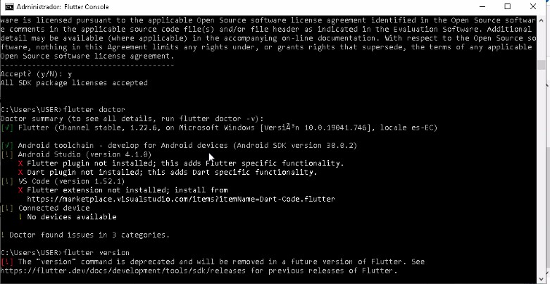7. Para instalar la versión beta de Flutter se debe ingresar el comando Flutter channel dev
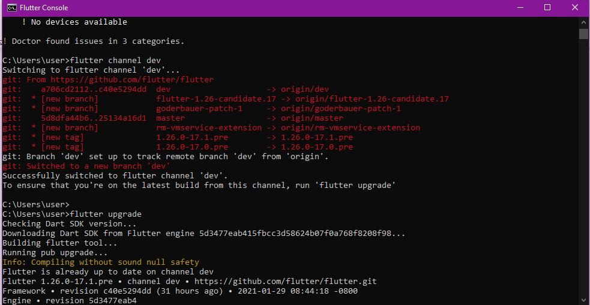8. Para actualizar el Flutter beta se debe poner el siguiente comando Flutter upgrade
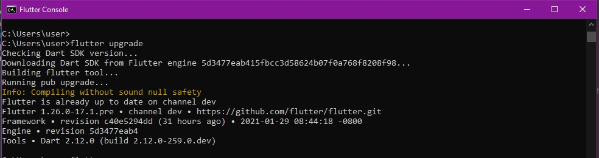9. Con el comando Flutter -v se puede verificar la versión
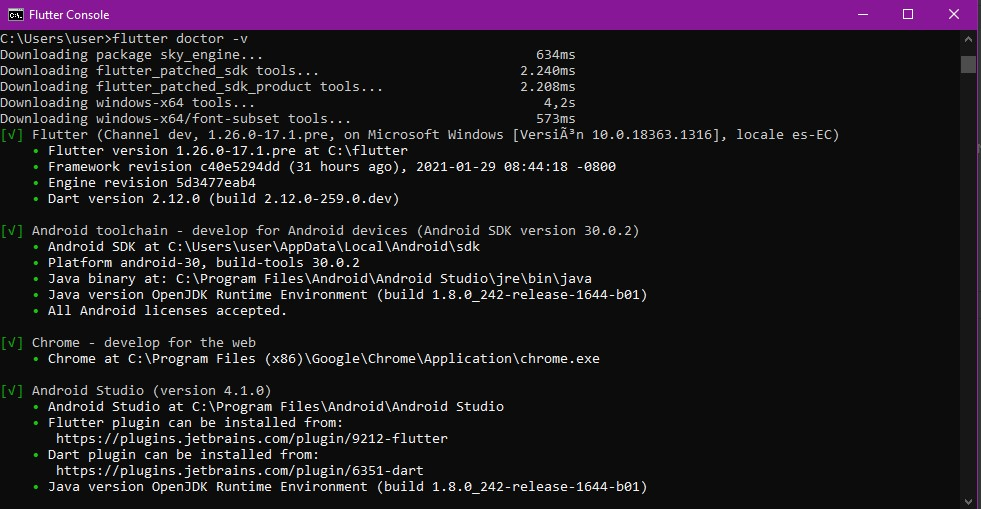10. Para poder ejecutar la aplicación directamente en Android Studio se debe instalar el chocolatey
11. Abrir la consola como administrador. Pulsamos Inicio y buscamos exe, una vez localizado el icono hacemos clic derecho sobre él y seleccionamos la opción “Ejecutar como administrador”, aceptamos la advertencia de seguridad y listo.
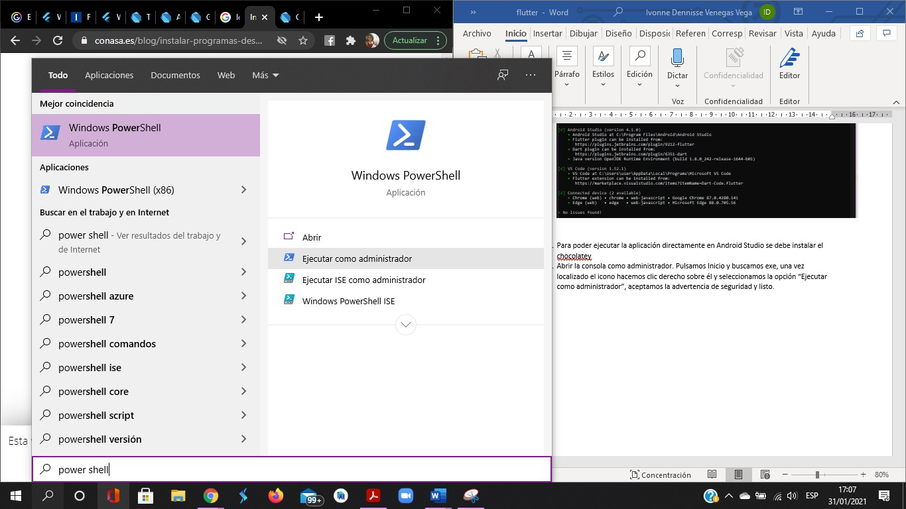12. Una vez dentro introducimos el siguiente comando y pulsamos enter:
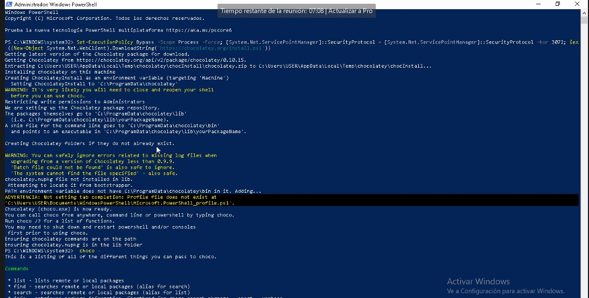@powershell -No Profile -Execution Policy Bypass -Command “iex ((New-Object System.Net.WebClient). DownloadString(‘https://chocolatey.org/install.ps1’))” && SET “PATH=%PATH%;%ALLUSERSPROFILE%\chocolatey\bin”
13. Con el comando choco search cmder se puede verificar la versión y la consola de ejecución
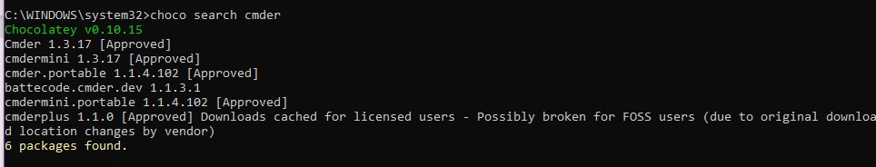14. Con el comando choco install Cmder se instala la consola de Linux sobre la de Windows.
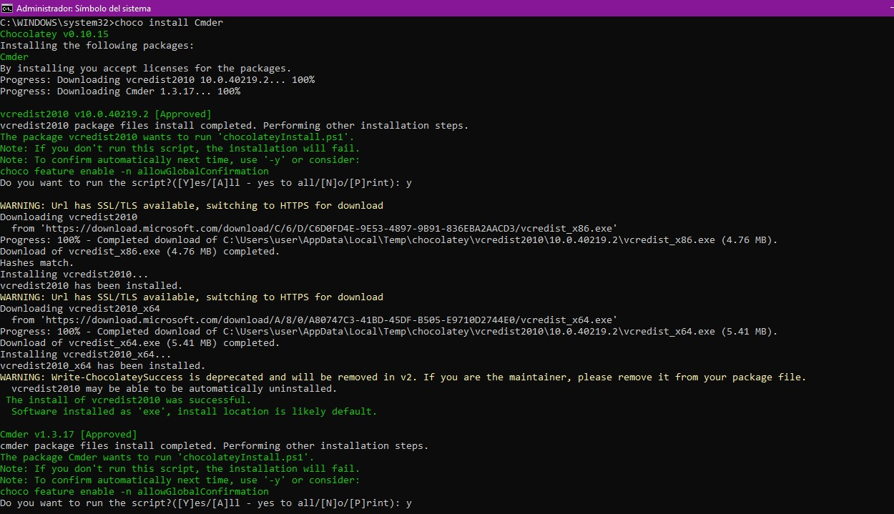15. Con el comando choco install dart-sdk
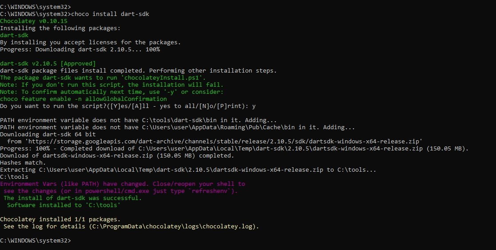16. Para instalar el JDK de Flutter y actualizar el SDK dar clic en el mensaje de aviso
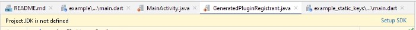17. Se desplegara una ventana con un menú en el cual se deberá escoger la opción de Download JDK.
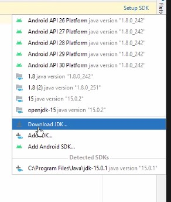Accede aquí para tener más información